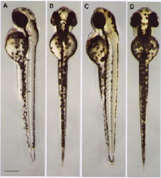
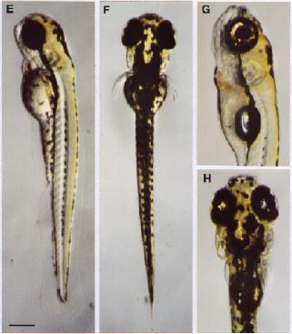

Modified from: Kimmel et al., 1955. Developmental Dynamics 203:253-310. Copyright © 1995 Wiley-Liss, Inc. Reprinted only by permission of Wiley-Liss, a subsidiary of John Wiley & Sons, Inc.
Fig. 39. Development during the hatching period of embryogenesis (A-F), and the early larva (G, H). Left side and dorsal views of the same embryo are paired for each time point. A, B: Long-pec stage (48 h). C, D: Pec-fin stage (60 h). E, F: Protruding-mouth stage (72 h). Note the progressive increase dorsally in yellow pigmentation due to xanthophore development, and the progressive filling of melanophores into the lateral stripe. G, H: The early larva (120 h) is photographed with a combination of transmitted and incident illumination, the latter revealing reflective iridophores. The swim bladder is inflated at this stage. Continued development of the lower jaw, protruding it more anteriorly, brings the lower and upper jaws close together in front of the eyes. Scale bars: 250 µm.

Figure 39A-D

Figure 39E-H